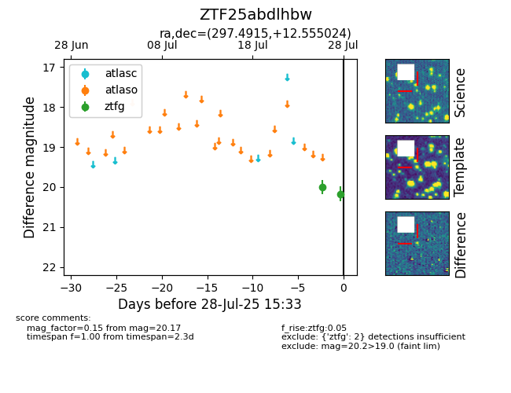

Target ZTF25abdlhbw at 2025-07-28 15:33, see:
FINK: fink-portal.org/ZTF25abdlhbw
Lasair: lasair-ztf.lsst.ac.uk/objects/ZTF25abdlhbw
ALeRCE: alerce.online/object/ZTF25abdlhbw
alt names
ZTF25abdlhbw (ztf,fink)
coordinates:
equatorial (ra, dec) = (297.4915,+12.55502)
galactic (l, b) = (50.8787,-6.91074)
photometry
last ztfg=20.17
2 ztfg detections
